Nikola Bondokic
Basic information about the person:
Last name:
- Bondokic
First name :
- Nikola
Birth date:
- 19.10.2000.
Height:
- 1.70cm
Weight:
- 80kg

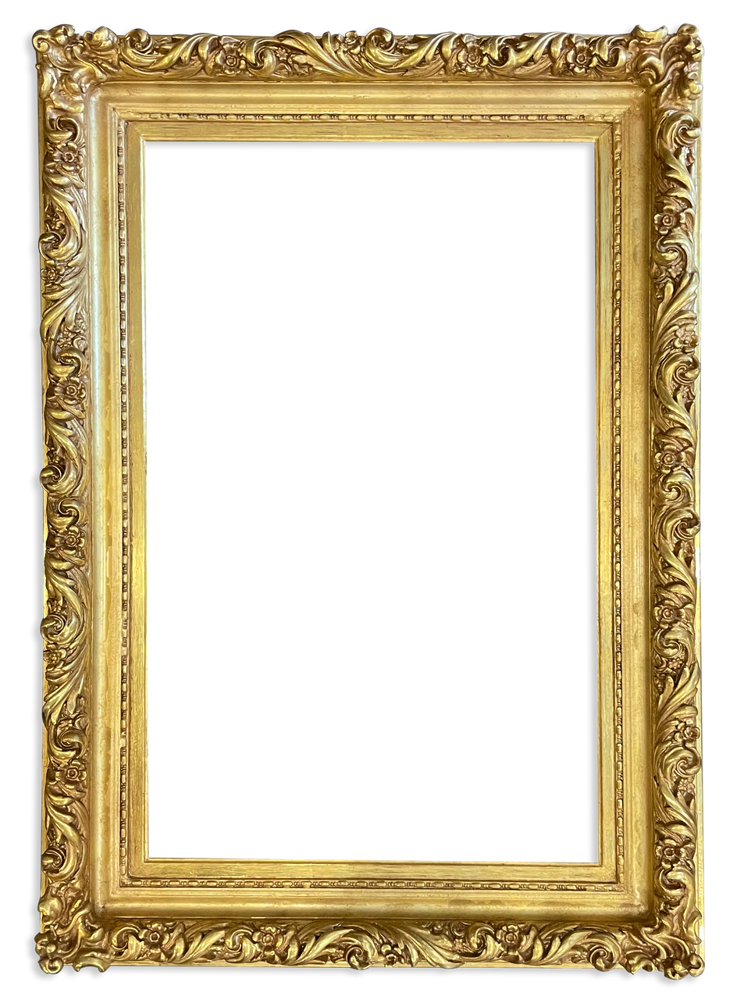
Little Nikola
As a child, Nikola was a blond, mischievous boy who liked to have a lot of toys. He was voluble but also a decent boy,
obedient and he knew what his parents really meant, whenever his parents said something, he listened to what his parents said.
He liked to have toys, which he had, his parents always bought him something new to calm him down. Next to him, of course, he
has his brother Marko, with whom he spent a lot of time outside playing football, tennis or any other children's game. In childhood,
he did not have many friends, only a few neighbors with whom he always stayed. They spent time playing with toys or some social games.
Nikola loved football as a child, which is why he started training. He played football every day, constantly, without getting tired.
That's how he started to travel. With the help of football, he traveled for the first time to Austria and Bosnia and Herzegovina.
He met many new friends, some from Serbia, others from France, Austria...
Elementary School
He finished Elementary School in his hometown, Kladovo. Elementary school lasted 8 years,
during which he made new friends and through which he first learned letters and numbers and
later much more complex things. He had no problems with his friends, he got along with everyone
and never argued. His favorite subjects were: Biology, Sports and History. As a student, he had
good grades and always did well in school. He was the idol of some teachers, whom he won over with
his good behavior.

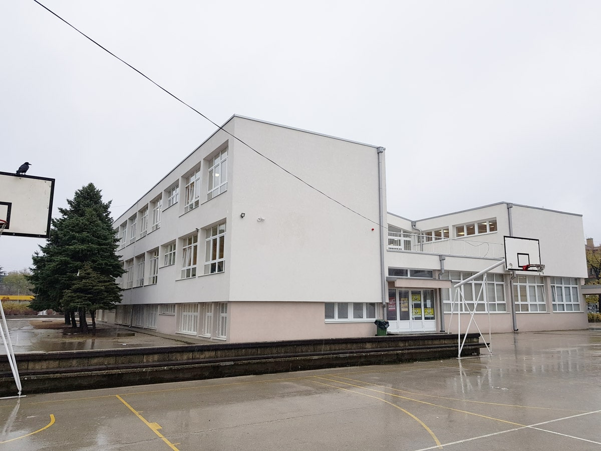

High school
He finished High school in Kladovo, the city where he lives. High school was something new and interesting for him.
At the beginning, high school seemed very difficult, but with time he mastered all the subjects and everything became easier.
In high school he met many new friends and they also got along very well and Nikola was in the best class of that generation.
High school lasted 4 years, but during that time Nikola learned many new things, he also got to know something new and that is programming,
which he became interested in. Since then, Nikola started to familiarize himself with something difficult, but interesting for him, he liked
it and started to learn. Which he continued later at the Faculty. At the end of high school, he received his diploma, but Nikola wanted to study
further, so he enrolled in the Faculty. He wanted to learn programming, so he enrolled in the Faculty of Informatics. Besides football,
this is another thing that started to interest him very quickly.

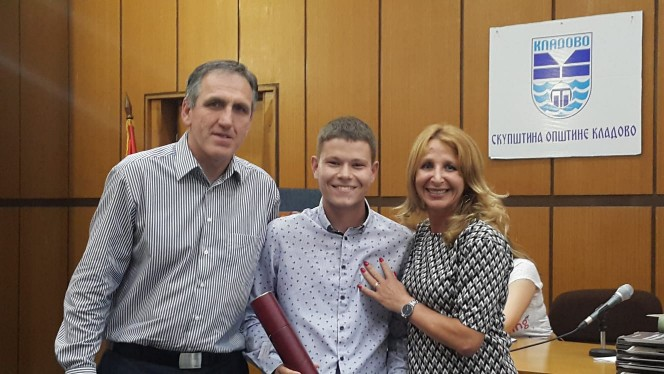
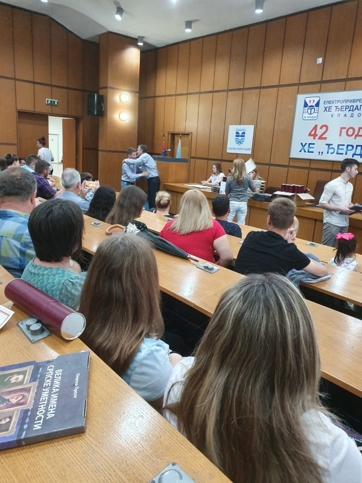
Faculty
Faculty enrolled abroad, that is, in Romania. He is still studying at the university, but will finish soon, after which he will get a job.
He enrolled in college because of his love for programming, which attracted him. For Nikola, college is a new chapter in his life that has
changed many things for him. The way of life and the way they treat people, up to the way Nikola handles himself in a foreign country, also
changed the fact that Nikola started to travel a lot by train, which he hadn't done before, but he liked it a lot . . At the beginning of the
Faculty, Nikola was resident in a country that he had not known until then, but over time he met a lot of new friends and got to know the country itself.
At the university, he gained many new knowledge and met many new teachers. At the beginning, college seemed very difficult, not because of the material,
but because of the situation that gripped the world, i.e. COVID-19. This disease made it difficult for Nikola to study and everything else, everything
became easier when school started face to face and when Nikola got to know new things for the first time, which he liked.
UCV Craiova
Str. A. I. Cuza nr.13,
Craiova,
Romania
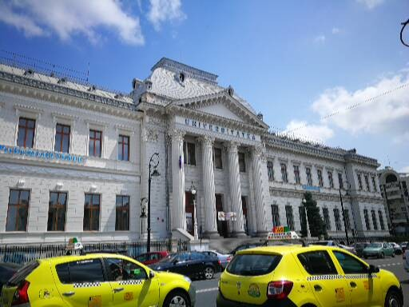
What would I like to do after college?!
My dream job that I would like to do is to be a website developer
As a child, I always wanted to be a footballer, but that changed over time when I started studying at school and when I learned about programming.
My love for programming only grew and grew as I began to learn more about web design and creating websites. I really liked this and started learning
more about it, started practicing and creating my own websites to practice and become a better programmer. When I finish college, I want to become a
real web developer and work in one of the companies that deal with it. I would like to learn what it's like to work in a team and what it's like to
do big and important projects.
I liked programming and creating websites so much that I was going to another country for work, so that I could work for one of the bigger companies.
I would like to meet many new friends who like to create websites so that we can share our knowledge with each other.
Football
I fell in love with football since I was little. When I first saw a football player on the field, I immediately wanted to be there. Immediately after that moment,
I asked my parents to sign me up for football in my local team, "FK ĐERDAP". Of course, my parents signed me up and I immediately started training. I really liked
football as a game and I met new friends. I went to every training and football was my first "love". With the help of football, I started traveling to other countries
such as: Bosnia and Herzegovina, Austria, Romania. I really liked the fact that I can travel with the help of football and I can do what I like. After some time,
I wanted this to become my life's work and to do this every day. I was very happy while training and playing matches with my team. I played in various categories
from small pioneers to the first team of the city club. Unfortunately, over the years, the club collapsed and no one wanted to train anymore. I was also the captain
of the team for a few years, until the moment I had to choose between school and football, which I didn't like at all. It was very difficult for me to choose, but
I chose the school because it was safe for me. With football, I wasn't sure if he would live in our city and if I would succeed with him. With the choice of school,
I said goodbye to football and the coach. I haven't had time to train, but I still play football in my spare time with my friends.
Travels
I didn't travel much as a child, but when I grew up I started traveling a lot, both with my parents and with friends. Also, when I enrolled in college
abroad, I started to use the train a lot as a means of transportation, which I liked a lot and was something new for me. I have not traveled the whole
world, but I have traveled to many countries, of course I would not stop here, I would like to travel much more to meet new people and see a new country.
I traveled by plane once, which I would like to do again and go a little further this time to a new country I have never been to before. My dream is to
go to Dubai, which I hope will come true.
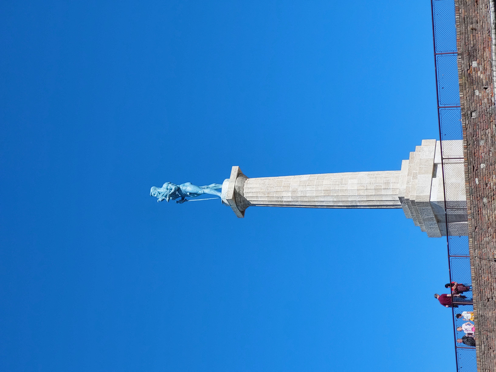
 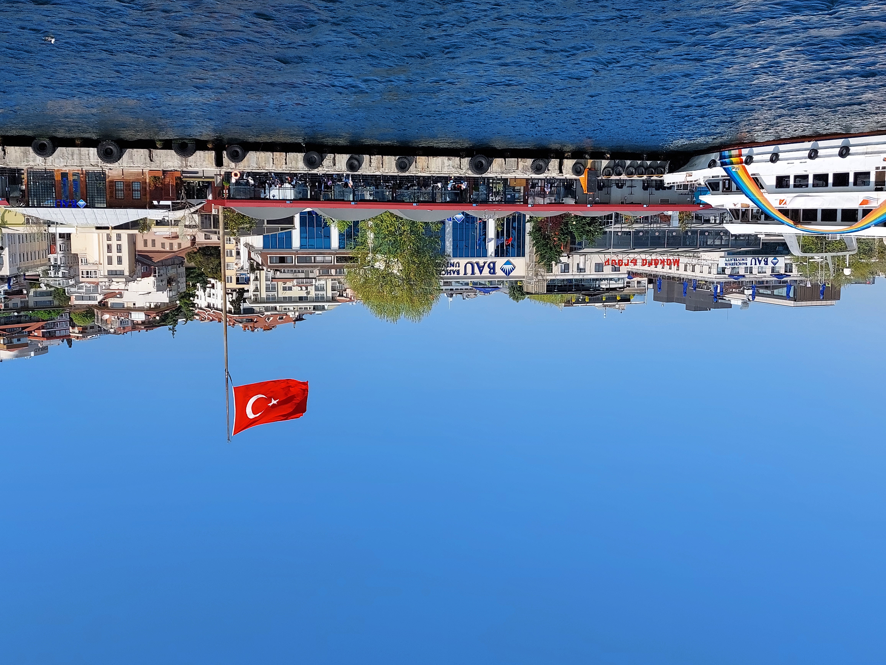
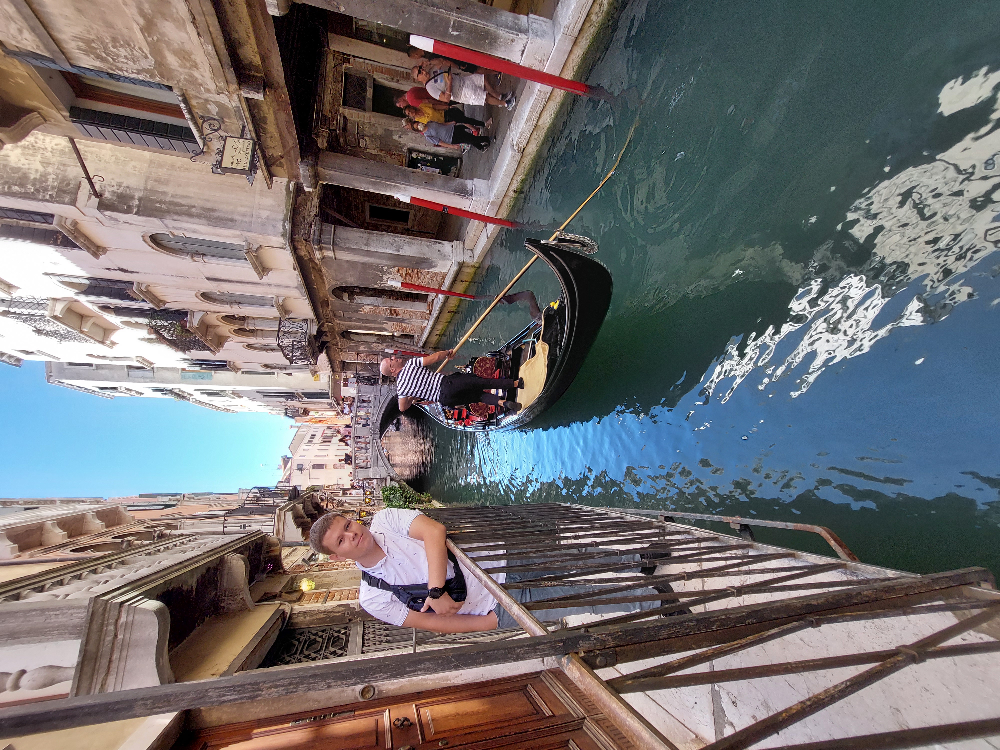
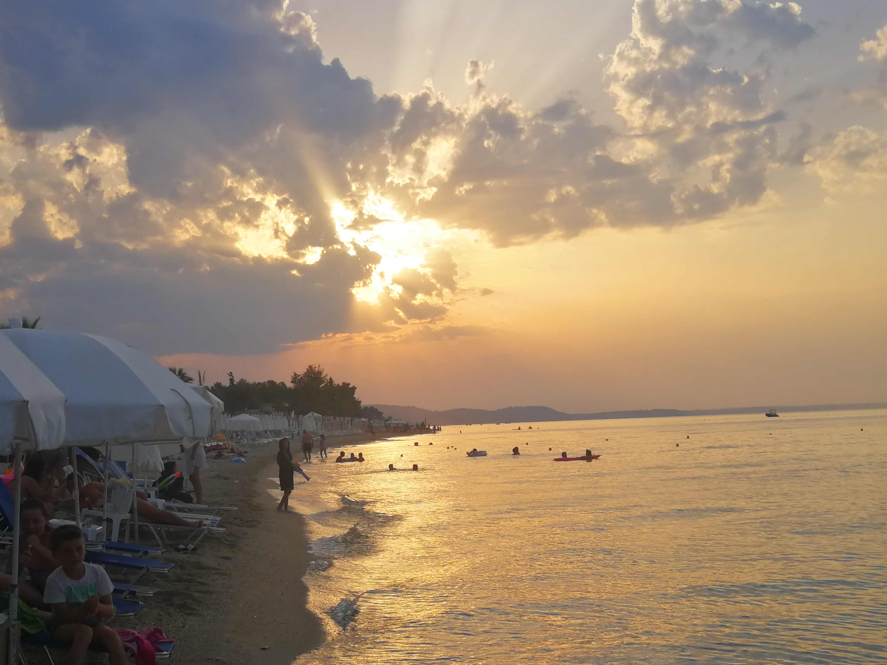
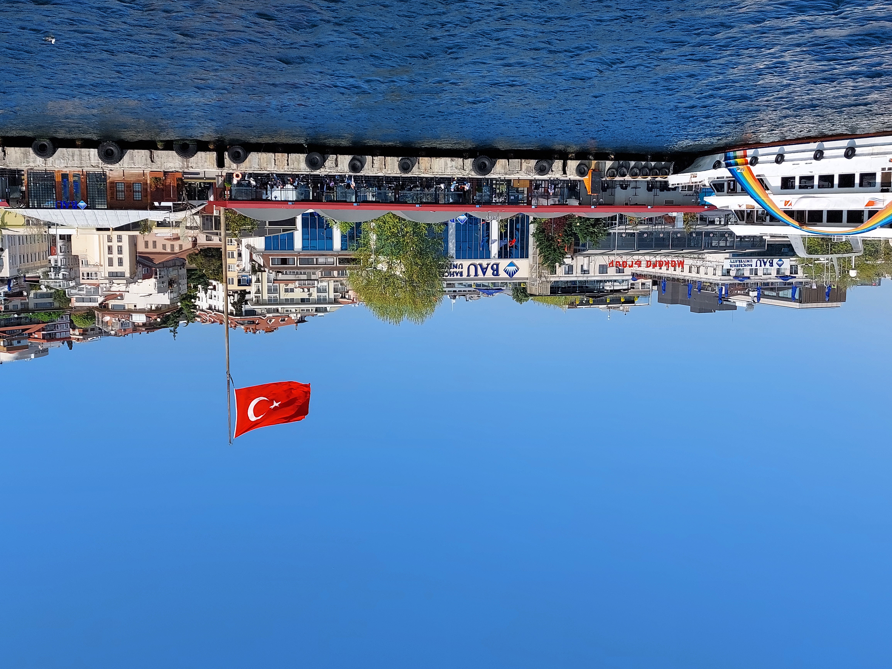
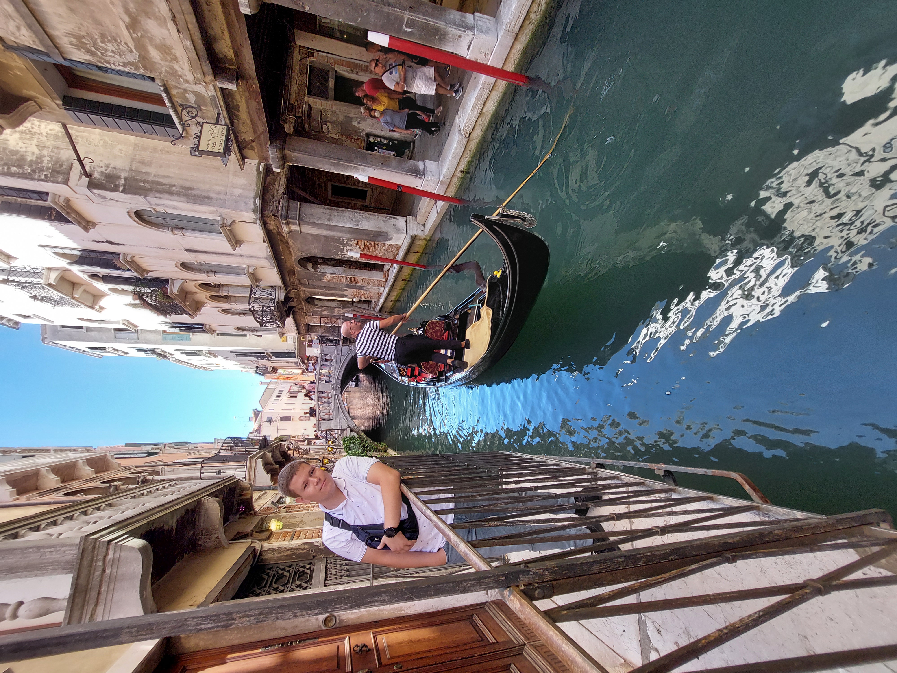
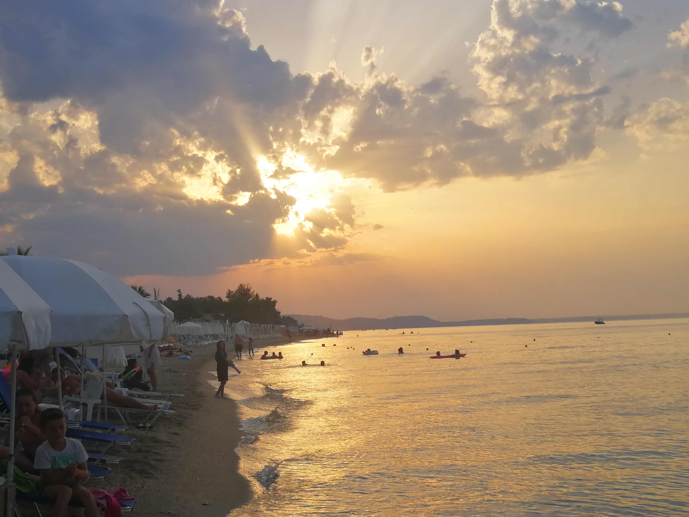
 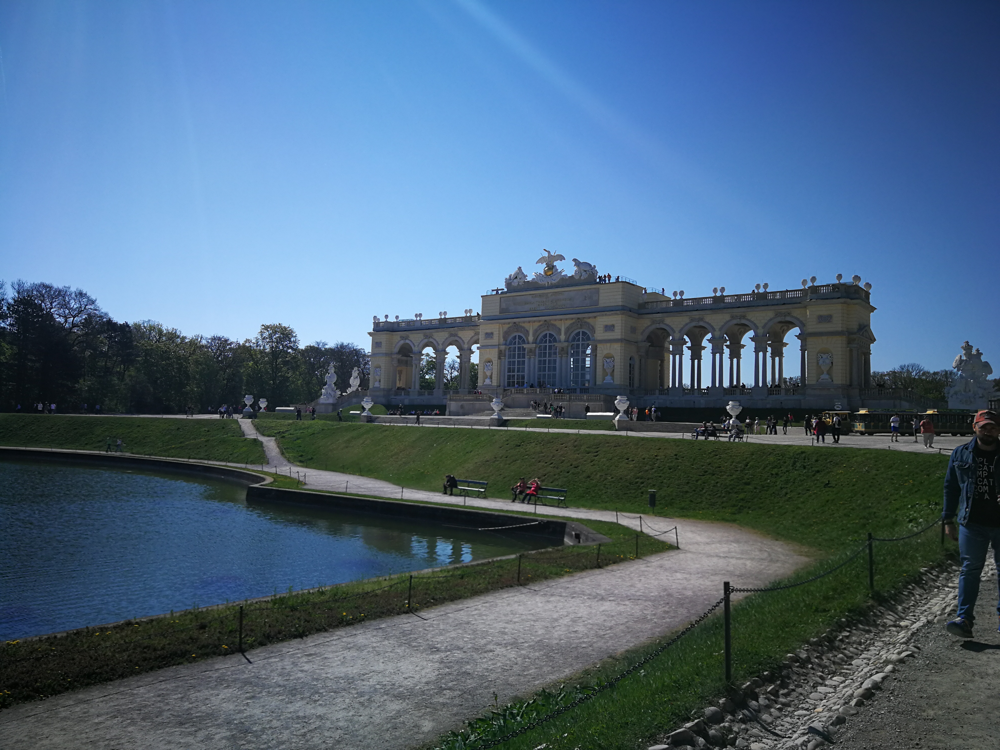
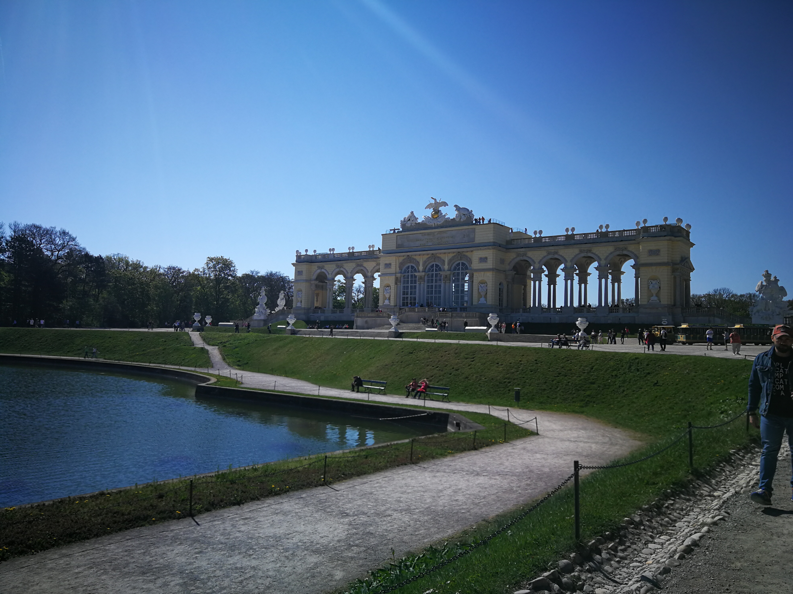
General text
Like any boy, I like cars and automobiles in the world. As a child, I always wanted to go to the car showroom where I can see all
the most prestigious and newest car models. My favorite car is the Range Rover Evoque, which I always wanted to own. Of course,
there are many supercars that I would like to own, but I still think that it is too much for me. As for music, I listen to any type
and I have no problem listening to foreign songs. Also, I like watching movies more than reading books, so I spend a lot of time at the cinema.
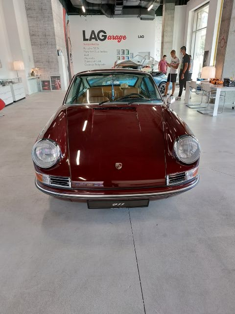
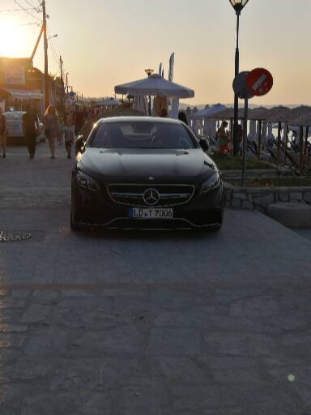